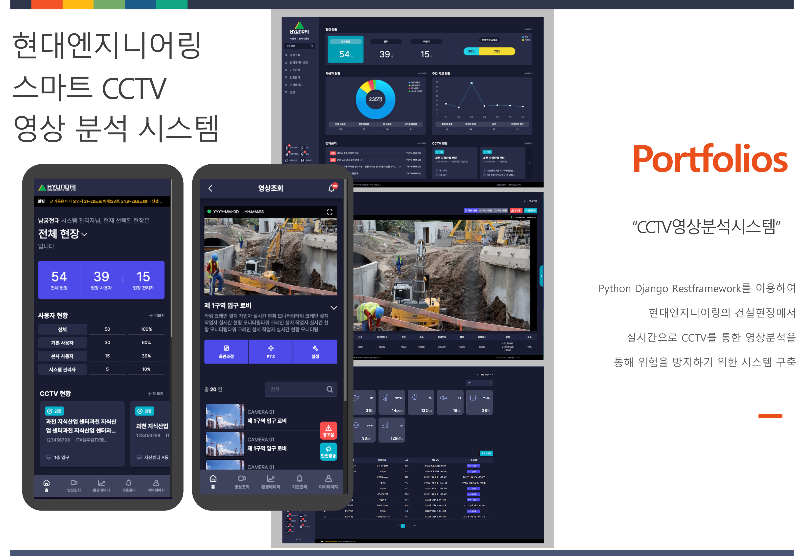
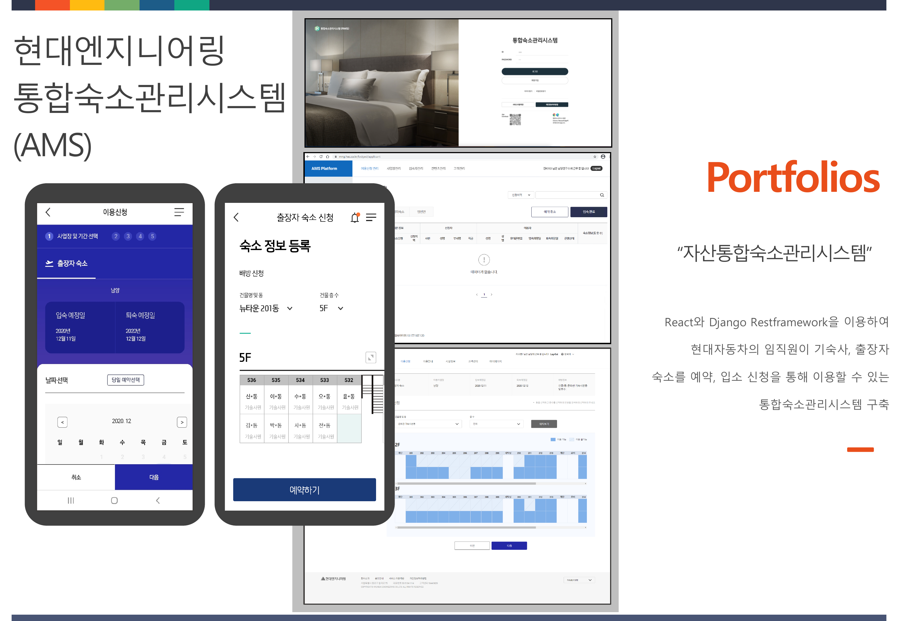
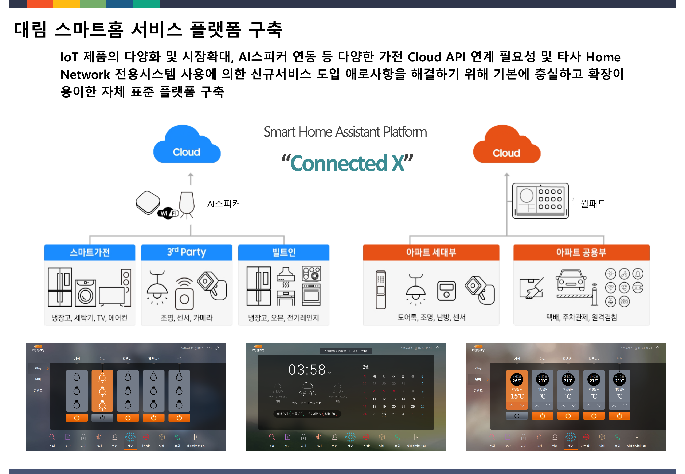
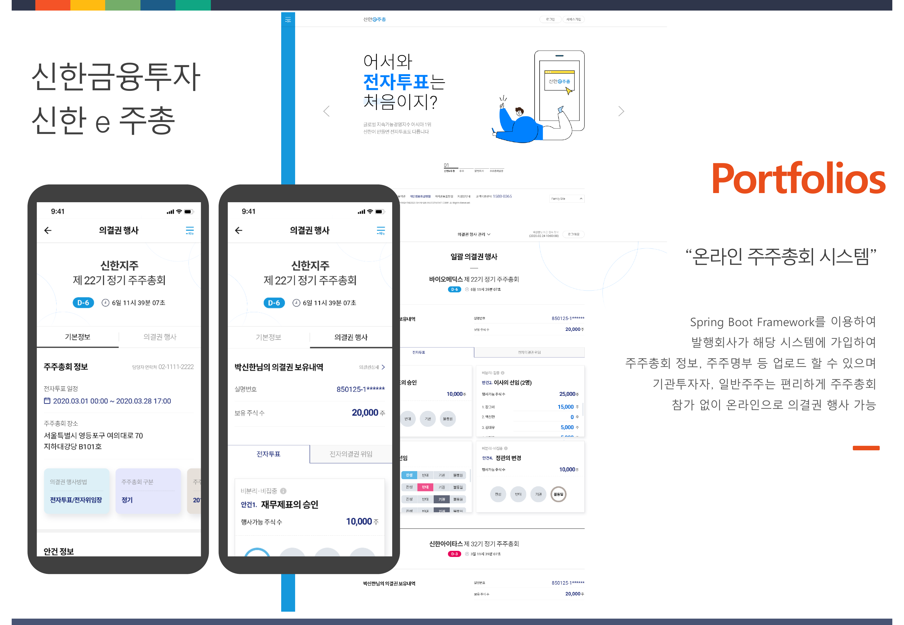
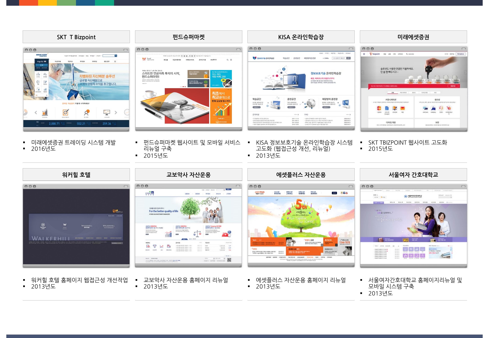

| 프로젝트명 | 수행기간 | 주요 역할 | 발주처 |
|---|---|---|---|
| 모바일/웹/데스크톱 크로스플랫폼 금융차트 개발 | 2024.04 ~ 2024.08 (약 5개월) | 프론트,백엔드 개발 | 서원정보 |
| 이마트 EZ1 다운사이징 및 U2L/EOS | 2023.08 ~ 2024.01 (약 6개월) | 프로젝트관리 및 배치프로그램 이관 | 이마트 |
| 이마트에브리데이 U2L 및 EOS | 2023.03 ~ 2024.07 (약 5개월) | 프로젝트관리 및 배치프로그램 이관 | 이마트에브리데이 |
| 현대엔지니어링 스마트 CCTV 영상 분석 시스템 개발 | 2022.06 ~ 2022.11 (약 6개월) | 프로젝트관리 및 실시간 영상분석 서비스 개발 | 현대엔지니어링 |
| 신세계 TV쇼핑 시스템 고도화 | 2021.10 ~ 2022.05 (약 8개월) | 프로젝트관리 | 신세계라이브쇼핑 |
| 현대엔지니어링 자산통합숙소관리시스템(AMS) 구축 | 2020.09 ~ 2021.04 (약 8개월) | 프로젝트관리 , 기획 , REST API 개발 | 현대엔지니어링 |
| 코스콤 비상장 주식 마켓 플랫폼 개발 | 2019.06 ~ 2020.01 (약 8개월) | 프로젝트관리(PMO) | 코스콤 |
| 대림 스마트홈 서비스 플랫폼 구축 | 2018.11 ~ 2019.04 (약 6개월) | 프로젝트 관리 및 서비스 개발 | 대림 |
| SKT TBIZPOINT SWING 연동시스템 개발 | 2016.10 ~ 2017.04 (약 6개월) | 프로젝트관리 | SK텔레콤 |
| 미래에셋증권 트레이딩 시스템 개발 | 2015.12 ~ 2016.05 (약 6개월) | 프로젝트관리 | 미래에셋증권 |
| SKT TBIZPOINT 웹사이트 고도화 개발 | 2015.05 ~ 2015.09 (약 5개월) | 프로젝트관리 | SK텔레콤 |
| 펀드슈퍼마켓 플랫폼 고도화 사업 | 2014.09 ~ 2015.04 (약 8개월) | 프로젝트 개발 관리(개발PL) | 펀드슈퍼마켓 |
| 워커힐호텔 웹접근성 개선 사업 | 2013.10 ~ 2013.12 (약 3개월) | 프로젝트관리 | SK네트웍스 |
| KISA 정보보호기술 온라인학습장 시스템 고도화 | 2013.10 ~ 2013.12 (약 3개월) | 프로젝트관리 | 한국인터넷진흥원 |
| 서울여자간호대학교 홈페이지 리뉴얼 및 웹접근성 개선 | 2013.07 ~ 2013.12 (약 6개월) | 프로젝트관리 | 서울여자간호대학교 |
| 우리투자증권 프라임브로커리지 시스템 구축 | 2012.10 ~ 2013.03 (약 6개월) | 프로젝트관리 | 우리투자증권 |
| 하나대투증권 펀드하나 모바일 사이트 구축 | 2011.11 ~ 2012.02 (약 4개월) | 프로젝트관리 | 하나대투증권 |
| LIG투자증권 웹사이트 및 트레이딩시스템 구축 | 2010.08 ~ 2011.02 (약 7개월) | 프로젝트관리 | LIG투자증권 |
| NH투자선물 FX마진 시스템 고도화 | 2009.05 ~ 2010.01 (약 7개월) | 개발 | NH투자선물 |





